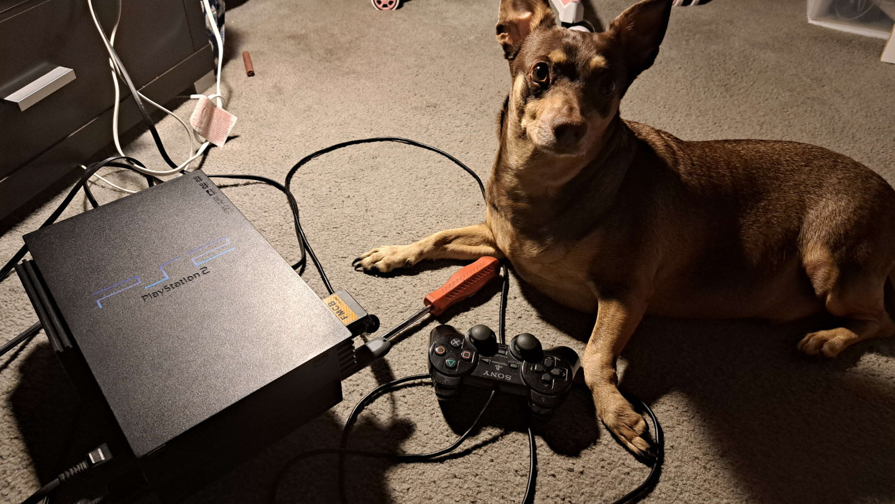

An old PS2 that belonged to either my cousin or late uncle. I had two at some point, but one vanished somewhere. Its only issues were a broken optical drive and 20 years worth of dust, though the former had nothing to do with my decision to give it new life... I just wanted a machine that could run a Japanese copy of Einhander for my dad. So the project was more or less a Father's Day gift. He helped clean its insides.
During early tests, I ran into a scare when I accidentally deleted my memory card's version of uLaunchELF in a failed transfer of an older version of uLE; 4.43, which was pre-installed on the card, constantly froze on file transfers from any external media. But it taught me that when in a pinch, uLE can be launched off of a USB stick. Also that 4.43 is a fickle guy.
My biggest issue with this build—and something I am willing to adjust with time—is its inability to run POPStarter (PSX emulator) off an HDD. I found someone with an identical build who dealt with the same headache, but I wish I did earlier because I probably took years off of my SSD's life trying to set up and destroy partitions for POPStarter to work. The third-party adapters are known to cause oddities and the solution would be to modify an official PS2 network adapter to accept SATA, but I don't want to spend more money right now. Miscellaneous hiccups stem from my broken controller and poor contact between ports and components.
As one should expect from random third-party hardware, this slightly cheaper alternative to an official Sony network adapter offers convenience in exchange for results. The fat PS2 models and their network adapters were built to support internal IDE hard drives. Note: Together they were to store temp data and update online games, not to bypass copy protections. IDEs are larger, more sensitive to mishandling, and provide less space than a SSD, which have very recently decreased to reasonable prices. Official adapters are also $5-8 more and must be modified to support connecting SSD. Why buy a 250gb IDE when you can find a 1 TB SSD for the same price? That was my line of thinking anyway.
The adapter gets the job done, and that's all a normal user needs. But the limitations it poses to the SSD are annoying; POPstarter hates me and want me dead. It lacks an ethernet port like official adapters do, so streaming games through a wired connection and online capabilities aren't possible. The two screws on the back of the adapter don't need to be twisted in far at all, but one is looser than the other and harder to line up when trying to fasten the adapter straight. I've been lazy and kept it unscrewed just to pull the SSD in and out quickly, but it's safer to twist the screws lightly each time lol.
I set up a new build of OPL to play Ape Escape: Million Monkeys (there is now an English patch) with my brother; he played Team Spike's story and I'm doing Team Specter. I think there's a mismatch with my OPL config files so they keep resetting on startup, but I'm too into the game to fix it. Anyway I'm feeling mixed on it... the scenario attempts to clear up the poorly explained villain of Pumped & Primed, but he's too plainly evil for it to matter. An abusive mad scientist murdered by one of his creations (lol). The visual aesthetic clash seems self-aware but very confused, like it can't decide whether it's comedic or dead serious. At least the comedy's solid when it leans into it? The gameplay is very fun with its weapon switching/juggling/stamina balance, but the later story stages and tournament mode suffer from repetitive objectives. Why a single tournament stage? P&P had at least 8...ehh, I think most of these issues were time constraints. P&P was definitely 'weird' for a spinoff but balanced and foreshadowed its twists. I understand why the Saruge Archive guy dislikes MM.
Note: we completed both modes and the ending is laughably bad! Thankfully the gameplay holds up and there are extra incentives, tons of weapon fusions, and cool cheat code unlocks. Worth a playthrough if you love P&P.
Not something I expected to write so "soon."
My internet was down for a few hours today, and managing PS2 ISOs is a good way to kill time. I promised my neighbor that I'd get Alien VS. Predator - Extinction up and running this week. But it's always something. Every time. This time, the ISOs fail to install on the SSD. Batch installer reads a game list off the SSD, attempts to install... freezes at 0%, spits out an I/O error.
"That's weird," I think, and attempt the same process on a different version of the same program. Run as admin and move the ISOs into another folder. No dice. On top of this, the SSD "parks" like a HDD and won't read after it's been plugged in for a minute.
"Maybe the drive isn't receiving enough power? My laptop's USB write speeds were low too." Same problem on my PC, including the freezing.
"Maybe I should check the drive's health."
CrystalDiskInfo and HDDSentinel freeze the PC trying to read it. Eject it, both programs revert to normal behavior.
"The I/O error was... nooo..."
Unless there is a cure I don't know of, that ends this era of the softmod, for now. My USB stick is fine and that can technically run PS2 games, though I haven't tried. The console's USB 1.0 speed is so slow that I worry some games will be choppy. Missing audio was a rare issue with PSX so I imagine it happens more when PS2 games expect to stream audio from the disk.
From the beginning, the SSD behaved oddly after building and deleting partitions with the PS2 HDD Manager. Maybe I messed with it too much in that futile effort to get POPstarter to load off of it, but is it possible to also destroy 1TB worth of sectors when only 60GB was used? (The first blog here now feels like an omen) Anyway, its load speeds slowed over time, to the point that it'd freeze any version of OPL if connected to the console. That was likely OPL trying to force access and failing. The SSD was also likely in a failing state for a minute, as I last moved a game to it in February. Despite the unspeakable, hair-pulling amount of troubleshooting it took to work, it was magical when it did...